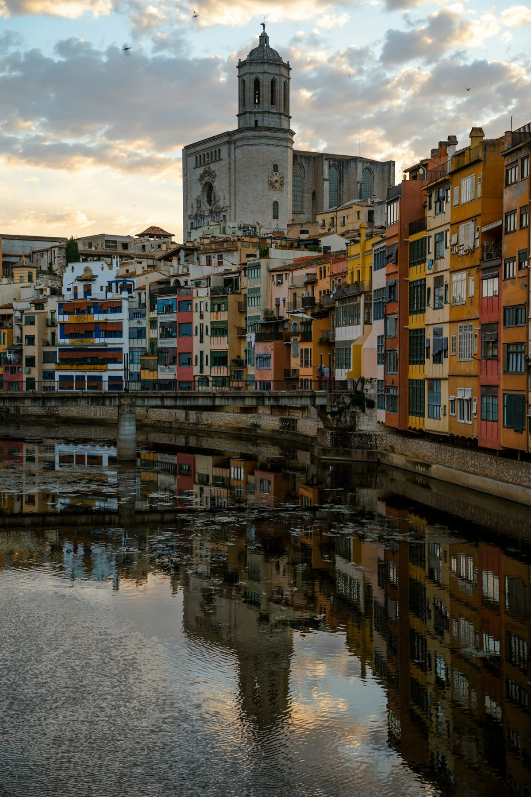
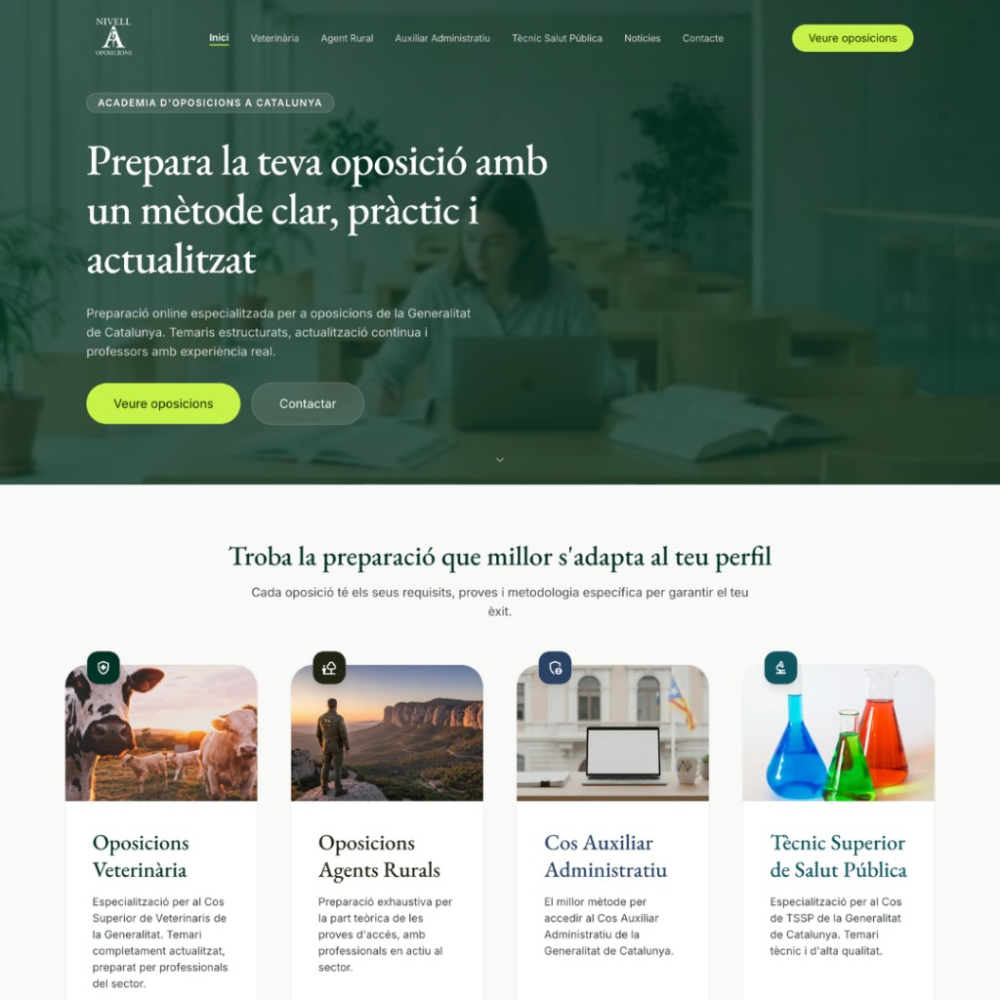

Disseny web a Girona per fer créixer el teu negoci
La majoria de webs no serveixen per a res.
Són lentes, no s'entenen o estan fetes a partir d'una plantilla que s'ha venut mil vegades. A KODIA construïm eines digitals amb intenció.
Una web no hauria de donar-te més feina
Per on començo?
Qui escriurà els textos?
Com faig canvis?
I si falla?
No adaptem el teu negoci a una plantilla
Adaptem la web al teu negoci.
Anàlisi
Entenem qui ets, què fas i per què el teu client t'ha de triar a tu i no a la competència.
Estratègia
Dissenyem el camí que seguirà l'usuari des que entra a la web fins que et contacta.
Execució
Codi net, disseny a mida i una velocitat que faria plorar a la teva antiga plantilla.
Acompanyament
No desapareixem. Som el teu departament digital per a tot el que puguis necessitar.
No oferim només webs.
Oferim criteri quan no tens clar què fer.
Una eina d'IA pot generar blocs, textos i dissenys.
Però no coneix el teu negoci, no sap què convé prioritzar i no et dirà que una idea no té sentit.
Nosaltres sí.
T'assessorem, posem ordre i t'acompanyem abans, durant i després de publicar.
Criteri
Decidim què necessita la web i què no.
Assessorament
T'expliquem les opcions sense tecnicismes.
Acompanyament
Prenem les decisions amb tu.
Suport
Continues tenint algú al darrere.
No contractes només una web.
Contractes algú que t'ajuda a fer-la bé.
Quin tipus de web necessites?
Web One Page
Ideal per a llançaments de productes o serveis molt concrets. Tot el que necessites en una sola pàgina d'alt impacte.
Més informacióWeb corporativa
L'aparador digital perfecte per al teu negoci. Múltiples seccions, blog i gestió de continguts fàcil.
Més informacióWeb a mida
Estructures complexes, integracions amb el teu CRM o necessitats tècniques que surten del normal.
Més informacióDisseny web a Girona, però oferint el servei a tot Catalunya.
Dissenyem i desenvolupem webs des de Girona per a tot tipus de negoci de Catalunya. Treballem amb empreses, professionals i projectes de qualsevol sector que necessitin una web clara, útil i feta a mida.

Girona, Catalunya
Crear una web no hauria de ser complicat
Parlem
Cafè o videotrucada. Ens expliques què necessites i analitzem si som la parella adequada.
Proposta
Pressupost tancat i timing clar. Sense sorpreses d'última hora ni lletra petita.
Recopilació
Et fem preguntes, a través d'un formulari o una reunió, per entendre bé el teu negoci i recopilar el material i la informació necessaris per crear la web.
Disseny i Codi
Veus com cobra vida la teva web a través d'un enllaç de prova privat.
Llançament
Premem el botó vermell. Ens encarreguem de tota la part tècnica de servidors.
Millora
Una web és un organisme viu. Et seguim ajudant per optimitzar-la segons el feedback real.
Hem fet webs per negocis molt diferents

Disseny web · One Page
Vetfar
One Page per a una empresa de farratge, palla i alfals. Estructura clara de productes, procés de compra i contacte directe per demanar pressupost a Catalunya.

Disseny web · Corporativa
Nivell A — Acadèmia d'Oposicions
Web corporativa per a una acadèmia d'oposicions. Presenta oposicions, mètode, equip i camins clars per informar-se i començar la preparació.

Disseny web · One Page
Eleus Brand
One Page per a una associació dedicada a la lluita contra el càncer. Narrativa forta, objectius clars i un disseny fosc amb impacte visual.
No tens clar què necessita el teu negoci?
L'anàlisi digital de KODIA no és un formulari automàtic.
Un professional revisarà la teva presència actual i t'entregarà un full de ruta personalitzat per guanyar visibilitat.
Anàlisi
Pàgina web
Impacte
Xarxes socials
Visibilitat
Google Business
Procés
Estudi de processos
Preguntes freqüents
Quant costa fer una pàgina web?
T'expliquem els preus d'orientació i què pot fer variar el pressupost a la pàgina de preus.
Quin tipus de web necessito?
Depèn de si necessites una One Page, una web corporativa o una web a mida. Mira els serveis i et direm què encaixa millor.
Què passa després de publicar-la?
Pots contractar un manteniment opcional. T'ho expliquem a la secció de manteniment.
Parlem de la web que necessita el teu negoci
Explica'ns què fas, et direm què necessites